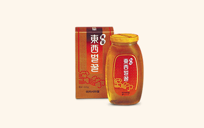

회사소개
회사소개
home > 회사소개 > 연혁
연혁
history
-
- 2025
- 05 건강한 여름나기 위한 이웃돕기 성금 1억원 기부
- 03 산불 피해 지역에 구호물품 전달
- 02 맥심 모카골드 제로슈거 커피믹스 출시
- 01 '따뜻한 겨울 만들기' 연탄 배달 봉사 진행
-
- 2024
- 12 연말 이웃돕기 성금 기부
- 11 제17회 삶의향기 동서문학상 시상식 개최
- 10 카누 캡슐커피 신제춤 5종 출시
- 09 2024 카누 바리스타 챔피언십 개최
- 08 동서문학상 문학캠프 진행
- 07 건강한 여름내기 성금 기부 및 나눔명문기업 500호 가입
- 05 포스트 크리치오 출시
- 04 제25회 맥심커피배 입신최강전 시상식
- 03 미떼, 소비자가 뽑은 좋은 광고상 수상
- 02 다문화 가정 아동을 위한 학용품 지원 봉사활동 진행
- 01 '카누 바리스타 페블' 캡슐커피 머신 발매
-
- 2023
- 12 공정안전관리(PMS) 최우수 P등급 획득
- 11 나눔국민대상 대통령 표창 수상
- 10 카누 에스프레소 라떼 2종 출시(밀크티라떼/말차라떼)
- 08 맥스웰하우스 마스터 헤이즐넛 블랙 출시
- 07 스타벅스 RTD 누적 판매량 10억 개 달성
- 06 제7회 동서식품 꿈의 도서관 도서기증식 진행
- 05 고용노동부와 안전문화 확산을 위한 업무협약 체결
- 04 '리츠 크래커 어니언' 출시
- 03 김석수 회장, 상공의 날 금탑산업훈장 수상
- 02 카누 바리스타 캡슐커피 출시
-
- 2022
- 12 연말연시 성금 기부
- 11 자매부대 육군 제21보병사단 위문금품 전달
- 09 제15회 맥심 사랑의 향기 성료
- 08 폭우 피해 이재민 지원 성금 1억원 기부
- 07 맥심 티오피 미디엄 로스트 (로우슈거 블랙, 돌체 라떼) 2종 출시
- 05 제16회 '삶의향기 동서문학상' 공모 실시
- 04 제23회 맥심커피배 입신최강전 시상식
- 03 동해안 산불 피해 복구 성금 2억원 기부
- 02 맥심 카누 라이트 로스트 아메리카노 출시
- 01 맥심 슈프림골드, 보건복지부 장관상 수상
-
- 2021
- 12 소비자중심경영(CCM)인증 획득
- 11 이웃돕기 성금 2억 3천5백만원 기탁
- 10 동서 한잔용 보리차 출시
- 09 소비자 중심경영(CCM)선포식 개최
- 08 선별진료소 의료진 위해 맥심 티오피 기부
- 07 이재민 긴급구호키트 제작 성금 1억원 기부
- 06 맥심 커피믹스 대규격 제품 종이 손잡이 도입
- 05 맥심 티오피 스모키 2종 출시
-
- 2020
- 12 지역사회 취약이웃 성금 기부
- 11 제15회 삶의향기 동서문학상 시상식 개최
- 10 맥심 플랜트 '서울시 건축상' 우수상 수상
- 09 동서 캐모마일 현미녹차 출시
- 08 폭우피해 이재민 지원 성금 2억원 기부
- 04 동서식품, 코로나19 극복 성금 2억원 기부
- 03 동서식품, '맥심 카누 시그니처 미니' 출시
- 02 동서식품, 신제품 시리얼바 '포스트 오곡코코볼바' 출시
-
- 2019
- 12 연말연시 성금 기부
- 11 동서식품, 2019 대한민국광고대상 2개 부문 수상
- 10 맥심카누 신제품라떼 3종 출시
- 07 동서식품, 팝업카페 '카누 비치카페' 오픈
- 06 맥스웰하우스 콜롬비아나 마스터 2종 출시
- 05 아이스티 티오 애플 출시
- 04 동서식품, '맥심 카누 시그니처 미니' 출시
- 02 오레오 국내 TV광고, 해외 8개국에 온에어
-
- 2018
- 12 리츠 레몬 샌드위치 크래커 출시
- 11 미떼 화이트 초코 출시
- 10 프리미엄 홍차 타라클래식 3종 출시
- 09 포스트 그래놀라 '센서리 지퍼팩' 패키지 도입
- 07 포스트 골든 그래놀라 아몬드빈, 골든그래놀라 밀크바 출시
- 06 동서식품장학회 장학증서 수여식 개최
- 04 브랜드 체험공간 '맥심플랜트' 오픈
- 03 동서식품, 제26회 국민이 선택한 좋은 광고상 수상
-
- 2017
- 12 제54회 무역의날, 7천만 불 수출의 탑 수상 (㈜동서, 프리마 수출)
- 11 맥심 모카골드 심플라떼 출시
- 09 동서식품, 혜명보육원 아동들과 ‘맥심 사랑나눔 여행’ 떠나
- 07 동서식품, ‘맥심 티오피(T.O.P)’ 컵커피 출시
- 05 국내 생산 스타벅스 병커피 3종 대만 수출
- 03 콜롬비아 수출관광해외투자진흥청으로부터 공로패 수상
- 02 ‘맑은티엔’ 독일 iF디자인 어워드 본상 수상
- 01 동서식품, ‘카누 라떼(KANU LATTE)’ 출시
-
- 2016
- 12 연말연시 성금 기부
- 08 리츠 크래커 및 리츠 샌드위치 크래커 출시
- 07 맥심 티오피 콜드브루 2종 출시
- 06 맥스웰하우스 콜롬비아나 출시
- 05 제13회 삶의향기 동서문학상 개최
- 03 맥심 국민이 선택한 좋은 광고상 수상
- 02 맥스웰하우스 캔커피, 독일 'iF 디자인 어워드' 수상
-
- 2015
- 12 파이낸셜뉴스 ‘뉴트렌드리딩’, 식음료부문, 오레오씬즈 수상
- 11 조선일보 ‘제52회 광고 대상’, 식음료부문 최우수상, 카누 레시피 편 수상
- 10 서울신문 ‘베스트 브랜드 대상’, 대상, 모카골드 수상
- 08 동서식품 모바일 홈페이지 개설
- 07 한국경제 ‘상반기 소비자 대상’, 식음료부문, 카누 수상
- 06 우리 문화 유산의 가치를 알리는 맥심 헤리티지 캠페인 전개
- 01 사회복지공동모금회 성금 5억원 기탁 (㈜동서, 동서식품㈜)
-
- 2014
- 05 제13회 식품안전의 날, 동탑산업훈장 수상(㈜동서 김상헌 회장)
- 04 국내 식음료 브랜드 최초, APAC Effie Awards 2014,신규 제품 및 서비스 부문 금상 수상(맥심 카누)
-
- 2013
- 12 제18회 소비자의 날, 대통령 표창 수상 (동서식품㈜ 박정규 부사장)
- 05 국내 브랜드 캠페인 최초, FAME 2013, 음료부문 은상 및 베스트 인사이트 부문 동상 수상
- 03 동서식품 장학회 장학금 지급 (수혜자 145명)
-
- 2012
- 12 제49회 무역의 날, 5천만 불 수출의 탑 수상 (㈜동서, 프리마 수출)
- 06 THE PROUD 대한민국 100대 상품, 2012 주목받는 신상품 건강/웰빙 부문 수상 (맥심 카누)/ 고객가치 최우수 상품 건강/웰빙 부문 수상 (T.O.P)
- 04 동서벌꿀 23.5 리얼허니 서포터즈 발대식 개최
- 03 한국산업의 브랜드파워(K-BPI), 골든 브랜드 커피 부문 1위
- 01 2012 서울영상광고제 TVCF 어워드, 은상 수상 (미떼)
-
- 2011
- 11 2011 올해의 광고대상 수상 (미떼)
- 10 인스턴트 원두커피 맥심 카누 기자 간담회 실시
- 06 일본 대표 커피 전문기업 AGF사에 첫 수출 물량 선적 (7만달러 규모)
- 03 소비자가 뽑은 좋은 광고상, 좋은 광고상 TV부문 수상
- 02 일본 대표 커피 전문기업 AGF사와 프리마 수출 조인식 실시(8년간 3만 6500톤, 1억 2500달러)
- 01 오레오 국내 첫 생산 출고 기념식 실시
-
- 2010
- 11 서울영상광고제 TVCF 어워드, 금상 수상
- 05 제2회 맥심 사랑의 향기 기증식 진행
- 03 소비자가 뽑은 좋은 광고상, 좋은 광고상 TV 부문 수상
-

- 2009
- 10 제1회 맥심 사랑의 향기 기증식 진행
- 06 동서커피문학상 20주년 기념 문학 나눔 콘서트 개최
- 01 아름다운 재단 기부금 1천만원 전달
-
- 2006
- 08 제8회 맥심커피배 입신최강전 대회 개막
- 03 소비자가 뽑은 좋은 광고상, 좋은 광고상 TV 부문 수상 (맥심, 창가/서점/광장 편)
- 01 제8회 동서커피문학상 시상식 개최
-

- 2005
- 10 액상커피음료 진출 스타벅스와 라이선스 계약 체결
- 09 제7회 맥심커피배 입신최강전 대회 개막
- 05 Café de Maxwell House 오픈
- 03 소비자가 뽑은 좋은 광고상, 좋은 광고상 잡지 부문 수상
-
- 2004
- 09 회장 김용언, 대표이사 이창환 취임
- 03 소비자가 뽑은 좋은 광고상, 좋은 광고상 잡지 부문 수상
- 01 부평공장 HACCP 식품안전시스템 인증 획득
-
- 2003
- 11 한국광고단체연합회 주최, 제 17회 한국광고대회 국민훈장 동백장 수상
- 05 제35회 동서식품㈜ 창립기념일 행사 실시
- 03 동서식품 장학회 장학금 지급
-
- 2002
- 11 제6회 동서커피문학상 시상식 개최
- 09 제4회 맥심커피배 입신최강전 대회 개막
- 03 동서식품 장학회 장학금 지급
-
- 2001
- 09 제3회 맥심커피배 입신최강전 대회 개막
- 03 동서식품 장학회 장학금 지급 (수혜자 112명)
-
- 2000
- 10 제2회 맥심커피배 입신최강전 대회 개막
-
- 1999
- 03 소비자가 뽑은 좋은 광고상, 좋은 광고상 TV 부문 수상
-
- 1998
- 05 제30회 동서식품㈜ 창립기념일 행사 실시
- 04 동서식품 홈페이지 개설
- 10 맥심 플랜트 '서울시 건축상' 우수상 수상
- 02 유럽에 맥심 커피 수출
-
- 1997
- 02 제1회 맥심배 생활체육 전국스키대회 주관 및 후원
-
- 1996
- 05 문학의 해 기념 ‘시와 맥심이 축제’ 주관
- 03 대표이사 김용언 취임
- 02 원심분리에 의한 농축 커피액 탈기방법 특허 등록
-

- 1995
- 07 벌꿀제품 특허 등록
-
- 1994
- 10 94 히로시마 아시안게임 한국 공식업체로 선정
-
- 1993
- 12 동서식품 장학회 장학재단 설립
- 08 KGF와 커피 및 시리얼 기술도입 계약 체결
- 05 제25회 동서식품㈜ 창립기념일 행사 실시
-
- 1992
- 12 유럽에 맥심 커피 수출
- 01 전국 19개 영업소 명칭을 지점으로, 출장소를 영업소로 각각 승격
-
- 1990
- 08 부평 동서식품 사원아파트 준공
-
- 1989
- 12 제1회 TPM 분임조 경진대회 개최
- 10 제1회 동서커피문학상 시상식 개최
-
- 1988
- 05 제20회 동서식품㈜ 창립기념일 행사 실시
-
- 1986
- 12 미국에 맥심 수출 (수출 실적 1천67만 달러 달성)
- 11 일본에 프리마, 포스트 수출
- 07 태국에 커피, 프리마 수출
- 06 호주에 인스턴트 커피 수출
-
- 1983
- 12 동서식품 기술연구소 설립
- 11 동남아에 맥스웰 그래뉼 수출
-
- 1982
- 12 인천시 효성동 세계 최대 규모의 커피크리머 제2공장 준공
- 04 동서식품 최초로 동남아에 프리마 수출
- 03 부회장 조필제, 대표이사 이홍희 취임
-
- 1979
- 09 제1회 5개 도시 순회 다방경영세미나 개최
-
- 1978
- 10 맥심, 맥스웰 그래뉼, 맥스웰 상카 기술도입 계약 체결
- 05 제10회 동서식품㈜ 창립기념일 행사 실시
-
- 1977
- 12 탱, 쿨에이드 기술도입 계약 체결
-
- 1976
- 12 세계최초 커피믹스 개발 및 발매
- 02 초대 회장 김재명, 대표이사 이인식 취임
-
- 1975
- 12 동서식품 최초로 호주에 인스턴트 커피 50톤 수출 (30만달러)
-
- 1974
- 12 커피크림 프리마 발매
- 01 대표이사 김재명, 부사장 조필제 취임
-
- 1973
- 05 제5회 동서식품㈜ 창립기념일 행사 실시
- 01 제1회 커피를 주제로 한 주부에세이 ‘커피와 행복’ 공모 당선자 시상식 개최
-
- 1972
- 03 인천시 청천동 부평 제1공장 원두 창고 신축
-
- 1970
- 12 맥심, 맥스웰 그래뉼, 맥스웰 상카 기술도입 계약 체결
- 09 동서식품 최초로 맥스웰하우스 레규라 그라인드 커피 발매
- 08 인천시 청천동 부평 제1공장 공장동 건물 및 부속건물 준공
- 06 미국 제너럴푸드사와 커피제조(S/D, R/G) 기술도입 계약 체결
- 03 인천시 효성동 한국수출공업단지내 제1공장 착공
-
- 1968
- 01 동서식품주식회사 설립등기
- 01 초대 대표이사 신원희 취임